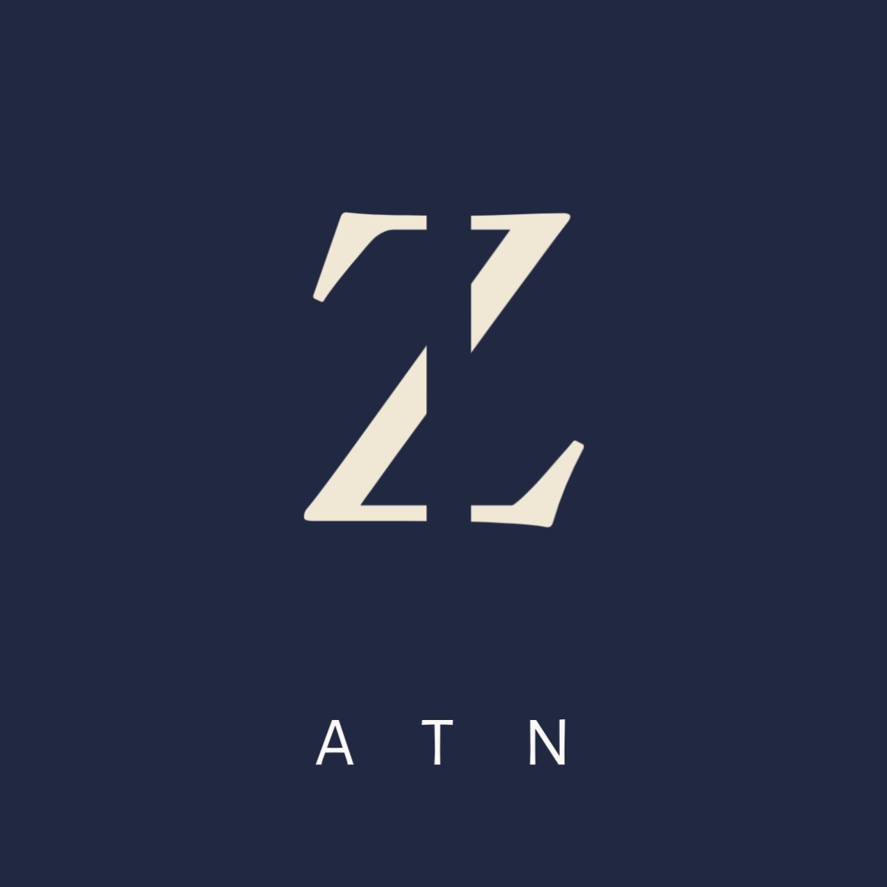
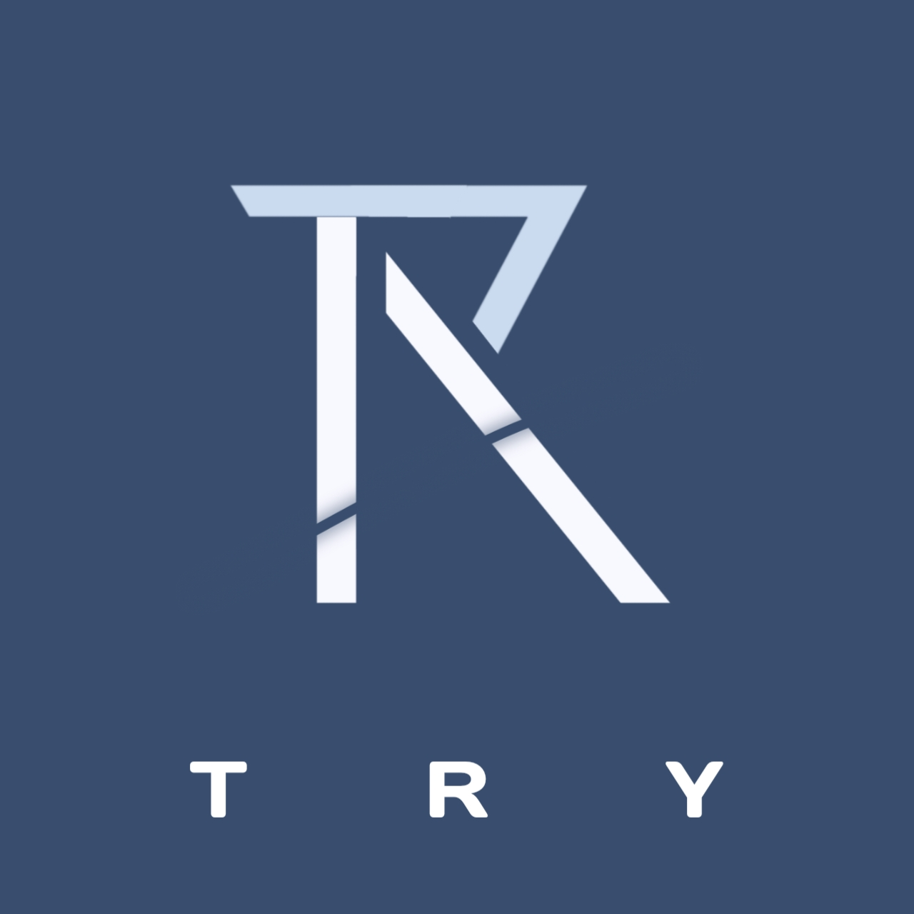
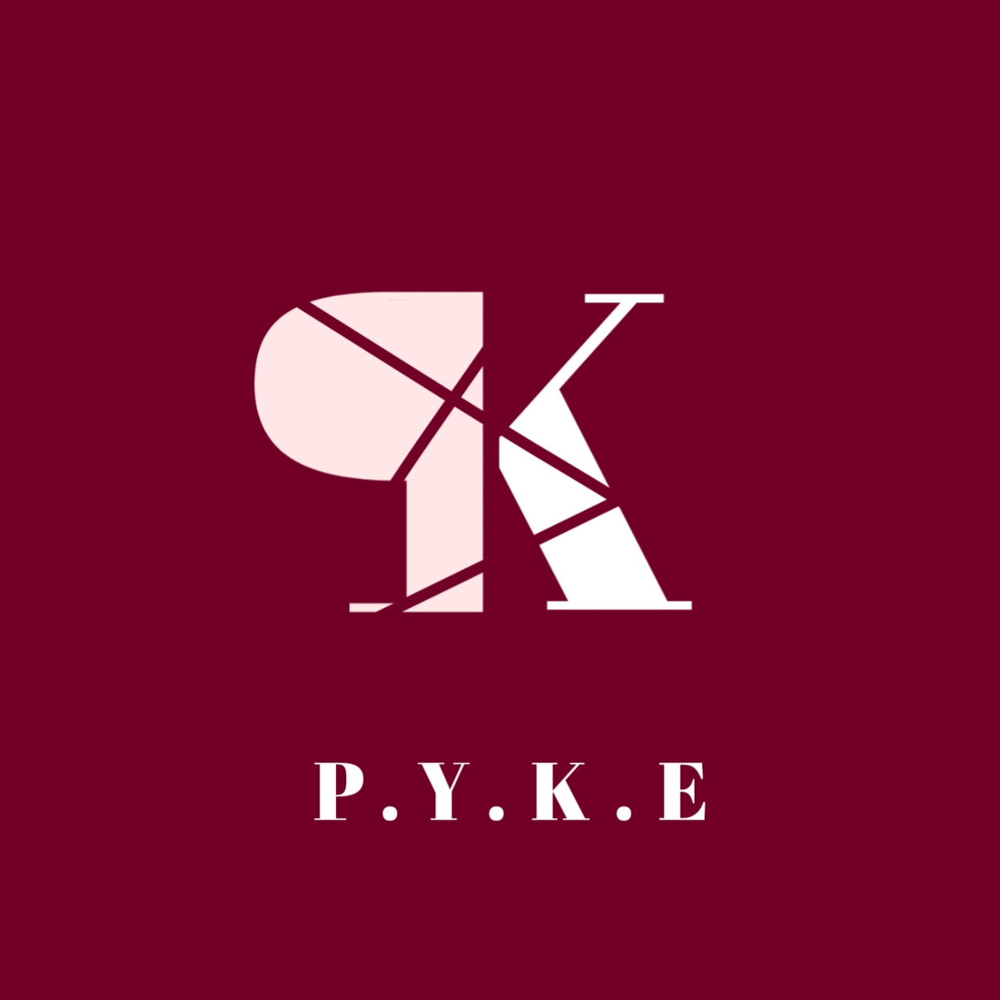

The Beginning of it all
It all started in October 2025 when I was bored and had nothing to do and I needed money because I could not stay idle all day long.
So I decided to learn graphic design and find a job, I was on the search for a job while learning graphic design but unfortunately I could not find any customers even after trying different social media platforms i.e Tiktok, YouTube, Instagram, and WhatsApp.
So I gave up on graphic design for a while and just last month I picked it up again because I had to learn something at least. And that is when I started learning web design as well ❤️🩹. It is really interesting and engaging.
My Designs
.jpg)
LMS — Luxe Monogram Studios
A minimalist luxury logo created with smooth flowing lines and a modern monogram style. The design focuses on elegance, simplicity, and premium branding aesthetics.

ATN
A clean and modern logo concept designed with bold typography and a simple structure. The logo represents confidence, clarity, and strong brand identity.

TRY
A creative experimental logo design focused on exploring modern shapes, balance, and visual composition while maintaining a minimalist appearance.

PYKE
A sleek and modern brand logo concept designed with a minimal aesthetic and strong visual presence. The design combines simplicity with a stylish contemporary feel.